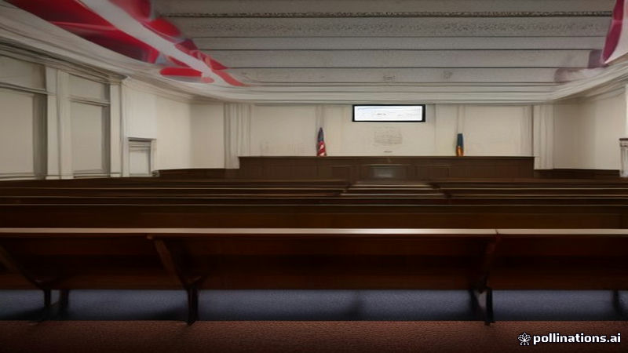

ব্রিটিশ কমেডিয়ান রাসেল ব্র্যান্ডকে ধর্ষণ ও যৌন নির্যাতনের দোষী সাব্যস্ত
DW, Al Jazeera English, France 24 · 2026-11-05
AI-generated illustrationলন্ডনের জুরি রাসেল ব্র্যান্ডকে একবারের ধর্ষণ ও তিনটি যৌন নির্যাতনের অভিযোগে দোষী রায় দিয়েছে, তাকে 'যৌন শিকারী' হিসেবে চিহ্নিত করা হয়েছে।
আল জাজিরা ইংলিশ ও ফ্রান্স ২৪ অনুযায়ী, লন্ডনের একটি জুরি বৃহস্পতিবার রাসেল ব্র্যান্ডকে একবারের ধর্ষণ এবং তিনটি যৌন নির্যাতনের অভিযোগে দোষী রায় দিয়েছে।
ডব্লিউএর উল্লেখ অনুযায়ী, প্রসিকিউশন ব্র্যান্ডকে যৌন শিকারী হিসেবে চিহ্নিত করেছে, এবং মামলাটি ১৯৯৯ থেকে ২০০৯ পর্যন্ত ঘটিত অভিযোগগুলোকে অন্তর্ভুক্ত করে।
কোর্টের রায়টি দশ বছরব্যাপী alleged অপরাধের প্রমাণের উপর জুরির মূল্যায়নকে প্রতিফলিত করে। রায়টি আদালত দ্বারা প্রকাশ্যভাবে ঘোষিত হয়েছে। এই মামলা মিডিয়া আউটলেটগুলোর কাছ থেকে ঘনিষ্ঠভাবে অনুসরণ করা হয়েছে।
Read the original reporting at the links above.
English version
British Comedian Russell Brand Convicted of Rape and Sexual Assault
A London jury on Thursday found British comedian and actor Russell Brand guilty of one count of rape and three counts of sexual assault, according to Al Jazeera English and France 24.
Prosecutors, cited by DW, described Brand as a sexual predator, and the case involved alleged incidents spanning from 1999 to 2009.
The court’s decision reflects the jury’s assessment of the evidence presented over the decade‑long span of alleged crimes. The ruling was announced publicly by the court. The case has been closely followed by media outlets.